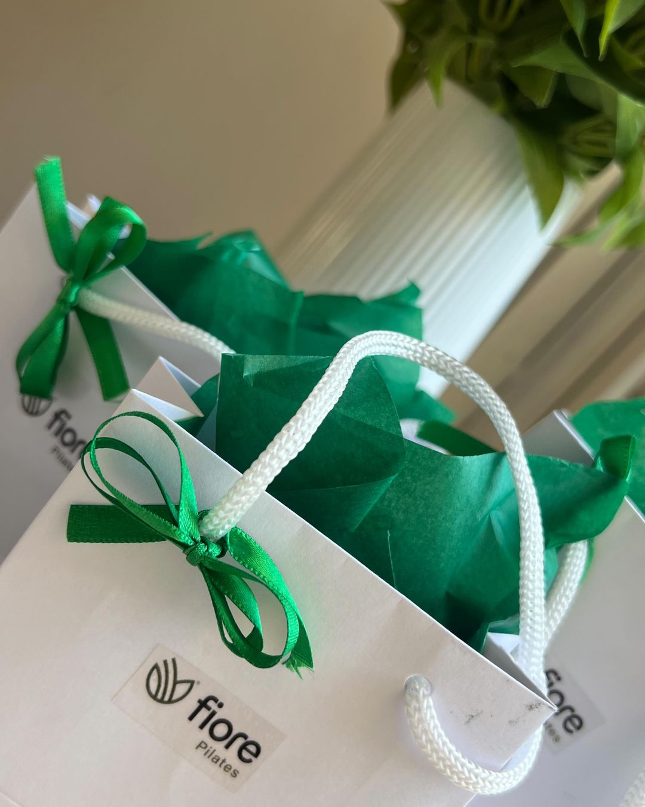
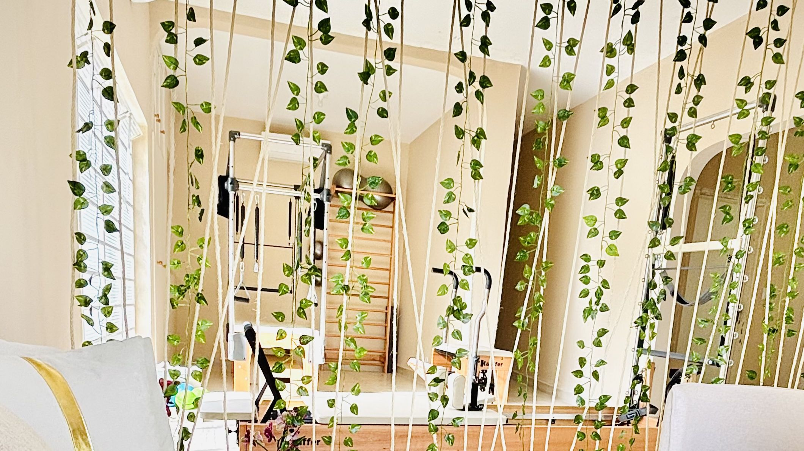

Programa Florescer em BauruUm cuidado completo
para você florescer
Pilates, fisioterapia pélvica e terapias manuais num só plano, montado na avaliação inicial, com atenção especial às gestantes.
Você não precisa fazer tudo: o plano reúne só o que faz sentido para o seu momento.
Várias formas de cuidado, um só plano
O Florescer é o programa integrado da Fiore. Em vez de uma abordagem isolada, reunimos as frentes de cuidado que fazem sentido para você, com uma equipe que acompanha cada fase da sua jornada.
Cada plano nasce da avaliação inicial e é ajustado ao longo do tempo, respeitando o seu corpo, a sua rotina e o seu momento.
Quatro frentes, um só cuidado
Uma equipe formada em Fisioterapia, trabalhando junta pelo seu bem-estar.
Pilates individualizado
Aulas adaptadas à sua fase, com foco em core, postura e estabilidade, inclusive o Pilates para gestantes.
Fisioterapia pélvica
A fisioterapia pélvica cuida do assoalho pélvico na gestação, no pós-parto e em todas as fases.
Fiore Toque
Massoterapia e terapias manuais que podem ajudar a aliviar tensões e trazer mais leveza ao corpo.
Tecnologia que acompanha
Com o Mirae, nosso app próprio, a sua evolução fica registrada do primeiro contato a cada reavaliação.
O cuidado que passa pelas mãos
O Fiore Toque é o nosso espaço de massoterapia e terapias manuais, com a Rosana. Na gestação e no pós-parto, o toque terapêutico pode ajudar a aliviar tensões e completar o seu cuidado, sempre respeitando cada fase.

Tudo começa pela avaliação inicial
Fale com a gente
Pelo WhatsApp, conte o seu momento e tire as primeiras dúvidas.
Avaliação inicial
Um encontro individual para entender seu histórico, objetivos e rotina.
Seu plano Florescer
As frentes certas para você, com reavaliações e evolução acompanhada.
O que é o Programa Florescer?
É o nosso jeito de cuidar de você por inteiro: Pilates individualizado, fisioterapia pélvica e terapias manuais em conjunto, com uma equipe que acompanha cada fase.
Preciso fazer todas as frentes do programa?
Não. O Florescer é montado sob medida na avaliação inicial. Você pode começar pelo Pilates e somar outras frentes se fizer sentido.
O Florescer é só para gestantes?
Não. Gestantes são o nosso cuidado mais especial, mas o Florescer acolhe mulheres em todas as fases, idosos e reabilitação.
O que é o Fiore Toque?
É o nosso espaço de massoterapia e terapias manuais, com a Rosana. Pode ajudar a aliviar tensões, inclusive na gestação e no pós-parto.
Como começo?
Pela avaliação inicial individualizada. A partir dela montamos o seu plano e acompanhamos a sua evolução pelo app Mirae.
Outros cuidados que podem fazer sentido para você

Pronta para florescer?
Agende sua avaliação inicial e descubra o plano de cuidado ideal para o seu momento.